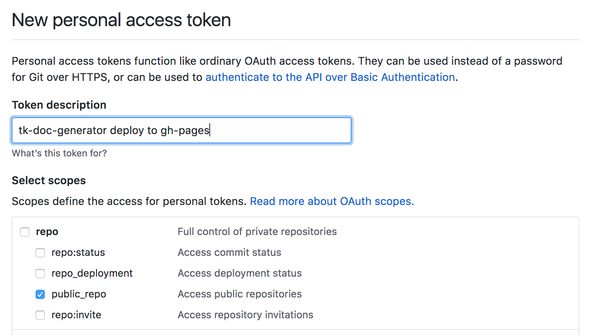

Integrating the Doc Generator with your repository
This repository makes it easy to generate documentation for ShotGrid Ecosystem and Toolkit related repositories.
What does the repo do?
Integrate this repository as a submodule in a Toolkit App or other ShotGrid App that benefits and it will:
- Convert any markdown in the
/docsfolder into multi-language html. - Provide a consistent look and feel to build output.
- Convert any rst/sphinx files in the
/docsfolder into multi-language html. - Automatically build and deploy documentation that is pushed to master.
- Automatically build a full site preview for each commit in a pull request. The previews are stored in an AWS S3 bucket of your choosing.
- Allow you to run local (docker based) previews.
- Allow you to generate a full reference collection site, where sphinx/rst docs from multiple repositories are collected and generated as a single release.
Is it difficult to set up?
We recommend a devops or developer to set up the documentation intially. Once set up, it is very easy to author and manage the documentation. For the setup phase, you need a basic understanding of git, github, CI (travis especially) and AWS.
Tech info
- Sphinx is used to convert rst into markdown
- Jekyll is used to convert markdown into a html website
- SG just-the-docs is the jekyll theme used to render the site.
- SG sphinx-markdown-builder is used to convert sphinx code into markdown.
Setting up doc generation
In order to use it for your repository, you need the following:
- Documentation (in markdown or
rstform) located in a/docsfolder. - Add this repository as a submodule of your repo in the folder
/tk-doc-generator. - An AWS S3 bucket set up for public web access if you want PR based previews.
- A location to deploy your target website. We recommend github pages and this is what the examples are based on.
- Travis for CI. For more information about how to set this up, see the section below.
Configuration file
The doc generator comes with a default jekyll configuration file. If you wish to override any settings, you can add a
jekyll_config.yml file into the root level of your repository.
Integrating with Travis CI
Once you have set up this repository as a submodule to your code, setting up travis CI or adding it to an existing CI is easy.
Using an example
If you prefer to work off an example rather than setting things up from scratch, we recommend making a clone of the ShotGrid developer site as a starting point.
Environment variables
The following environment variables should be defined in the travis .travis.yml file:
DOC_URL- The target url where released docs will go, e.g.https://developer.shotgridsoftware.com.DOC_PATH- The path where the released docs will go, e.g./dev-docs.S3_BUCKET- the name of a publicly accessible S3 bucket, in website hosting mode, e.g.mybucket.S3_WEB_URL- the website url where the bucket can be accessed, e.g.http://mybucket.s3-website.eu-west-2.amazonaws.com.
Travis secret preferences
The following (secret) environment variables should be defined in the travis preferences:
AWS_S3_ACCESS_KEY- AWS access key with permissions to put new items into theS3_BUCKET.AWS_S3_ACCESS_TOKEN- AWS access token with permissions to put new items into theS3_BUCKET.GITHUB_TOKEN- Github access token used to create a comment on the PR with a link to the built docs.
Folder locations
- Your documentation needs to be located in
/docs. - The build output will be generated in
/_build(see travis example below).
Setting up a github access token
In order for the CI to deploy to the gh-pages branch, you need to provide it with an access token
so that it can use github on your behalf. You can generate one by going to your personal settings,
developer, access tokens. Make sure you restrict the access token to only have access to public repos:

Example .travis.yml file
The following travis file illustrates how to integrate:
language: python
global:
- DOC_URL=https://developer.shotgridsoftware.com
- DOC_PATH=/tk-doc-generator
- S3_BUCKET=my-preview-bucket
- S3_WEB_URL=http://my-preview-bucket.s3-website.my-region.amazonaws.com
python:
- "2.7"
cache:
pip: true
directories:
# manually cache ruby dependencies
- $TRAVIS_BUILD_DIR/tk-doc-generator/vendor/bundle
before_install:
# required dependency for sphinx
- sudo apt-get install -y pandoc
install:
#
# install pyside - from https://stackoverflow.com/questions/24489588
- sudo apt-get install libqt4-dev
- pip install PySide --no-index --find-links https://parkin.github.io/python-wheelhouse/;
- python ~/virtualenv/python${TRAVIS_PYTHON_VERSION}/bin/pyside_postinstall.py -install
#
# jekyll dependencies
- bundle install --gemfile=./tk-doc-generator/Gemfile --deployment
#
# sphinx dependnecies
- pip install -r ./tk-doc-generator/requirements.txt
script:
# script that runs the CI and handles S3 previews
- python ./tk-doc-generator/travis-generate-docs.py
deploy:
# When commiting to master, auto-deploy to github-pages
# This will copy the contents of the _build folder to gh-pages branch and push
- provider: pages
local-dir: ./_build
target-branch: gh-pages
skip-cleanup: true
github-token: $GITHUB_TOKEN
on:
# only do this when on the master branch
branch: master
Running locally
In order to run the setup manually, you need docker installed.
Simply use the /preview_docs.sh script located in the root folder of
this repo in order to build the documents.
Github Shields
We recommend using the following shield to highlight that there are documentation
build using the tk-doc-generator:

[](http://github.com/shotgunsoftware/tk-doc-generator)
Configuring Search
The documentation system supports integration with Google Custom Search. This makes it easy to integrate site specific search results. This is disabled by default - in order to enable it, set up a google custom search profile and then add its search engine id into the configuration:
# add a google custom search box
# (see https://developers.google.com/custom-search/docs/element)
google_custom_search_id: your_search_key_here